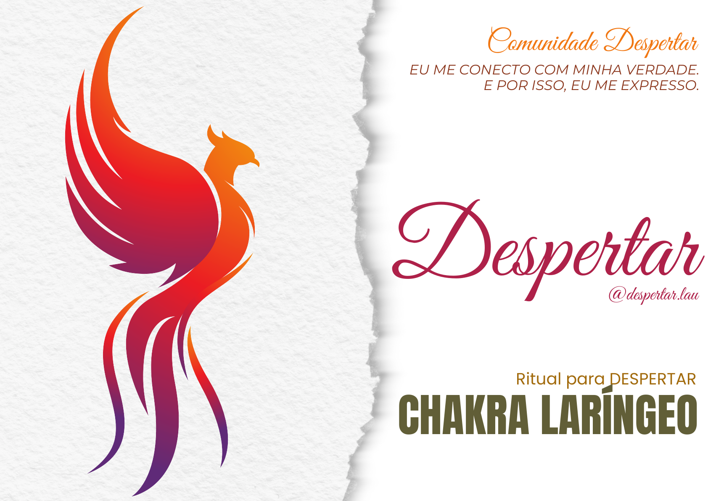

LAURA FLÁVIA · @DESPERTAR.LAU
Entre o que acontece
e a sua resposta,
existe um despertar.
Te convido a reconhecer esse espaço e a escolher conscientemente como responder ao que a vida traz.
Encontre o seu próximo passo ↓Materiais gratuitos
Depois do dia 31
Reflexões, vivências, relacionamentos
e caminhos de consciência.
3A 2T
O que você faz com o que lhe acontece?
Abra o 3A 2T e reserve um momento para olhar para si com mais consciência.

UM OLHAR PARA A SUA EXPRESSÃOSua voz também
merece espaço.
Um material sobre o chakra laríngeo para acompanhar sua jornada de autoconhecimento.
Abra o PDF gratuito →Cozinhar é um ritual.
Docinhos de tâmara com castanha de caju.
Um convite para o despertar.
Baú de ferramentas
Recursos e práticas que nascem da minha trajetória.
Um baú está nascendo. Em breve, compartilho com você.
UM POUCO DA MINHA HISTÓRIA
Eu sou Laura.
E a minha vida recomeçou.
Sobrevivi a uma tentativa de suicídio e a uma fratura na segunda vértebra cervical, a C2, sem sequelas. Depois disso, minha maneira de olhar para a vida mudou profundamente.
Ao longo desse caminho, passei a desenvolver a metacognição: a capacidade de observar meus próprios pensamentos e reações. Essa prática faz parte da forma como aprendi a lidar com minhas crises conversivas.
Hoje, estou reunindo meu baú de ferramentas para compartilhar aprendizados e práticas que me acompanham. Um convite para que você também amplie sua consciência e descubra novas formas de responder ao que acontece.
Com presença, Laura.Compartilho vivências pessoais e práticas de autoconhecimento. Este conteúdo não substitui acompanhamento médico ou psicológico.